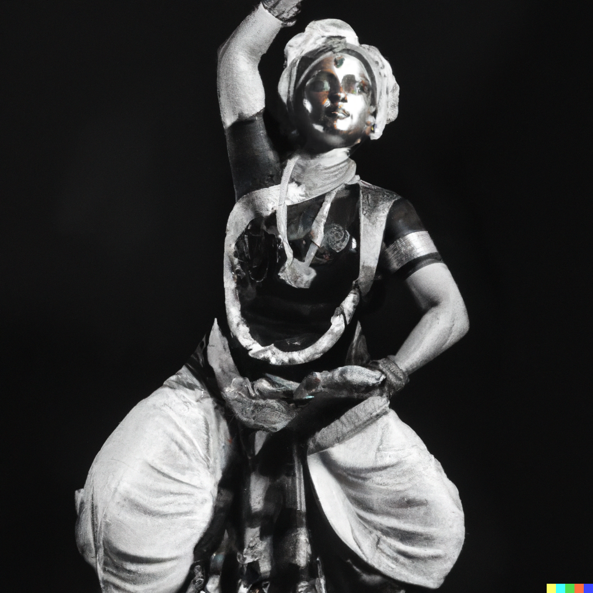

1a. I am actually really bad at coding. This project was a struggle but I’m willing to learn. My only experience with coding comes from the required Core 1: Interaction Studio class in Fall 2022.
1b. The part of the class that I resonated the most with me would have to be personalisation and responsivity. I enjoyed creating webpages that work across all devices and that reflect the personal style of the creator.
1c. The part that I most struggled with would have to be variables, navigation properties and animations. I look forward to overcoming my fear of these concepts in this class.
i am
nervous
but
excited.
3. I believe that I can use the coding skills that will be taught in the class to explore:
branding
web-design
content management
4. I like to compare a webpage to the human body. In which case, HTML would be the human body, CSS would be the clothes and JavaScript would be accessories or hairstyles.
5. My understanding of GitHub is that it a hostsite or platform that houses repositories-archives that act like a folder that holds several webpages together. This is why you can create multiple respositories on GitHub.
Chocolate
> Pasta
> Coffee
> Biryani
> Shawarma
> Seafood
7. check out these cool websites:
1. Daniel Arsham is one of my favourite artists of all time. I find his work conceptually and techincally inspiring. His design practise (and website) is a good representation of what he brings to the table.
2. Homer is an independent American luxury jewelry and accessories brand founded in 2018 and commercially launched in New York City in August 2021 by Frank Ocean. This website maintains a consistent brand identity while also being a succesful e-commerce platform.
3. -D is a British bimonthly magazine published by Vice Media, dedicated to fashion, music, art and youth culture. Their website is well-designed and easy to follow through, yet unique enough to stand out.

8. The picture above depicts a Bharatnatyam dancer as interpreted by Dall-E. I like this image a lot because it made me realise how to easily differentiate an actual picture/piece of art from one that was generated by AI-it's all in the hands.
9. these are some countries and cities I would like to visit:
Italy
Rome
Milan
Venice
France
Paris
Nice
Lyon
Japan
Tokyo
Kyoto
Osaka
11. these are some of my favourite artists and the genres that best suit their music:
Tame Impala
ALT / INDIE
Daniel Caesar
R&B / Soul
Doja Cat
Pop / R&B
Frank Ocean
Neo Soul
Kendrick Lamar
Hip-Hop / Rap
14. gradients in Html/CSS are pretty intuitive. First one must define the angle of the gradient, followed by the RGBA values of the colour chosen enclosed in brackets and the opacity of the colour-each of these definite values are seperated by commas.
15. Personally, I believe my style changes according to how I am feeling. Sometimes I feel full of energy and life and in that case I would use lots of saturated colours and visual aids, and at other times, I feel melancholic and prefer to use muted tones-I think this could explain the way my webpage looks at the moment.
16. If I had the ability to, I would incorporate a lot of my 3D work into my webpage. I would also try to incoroporate more AR/VR experiences.